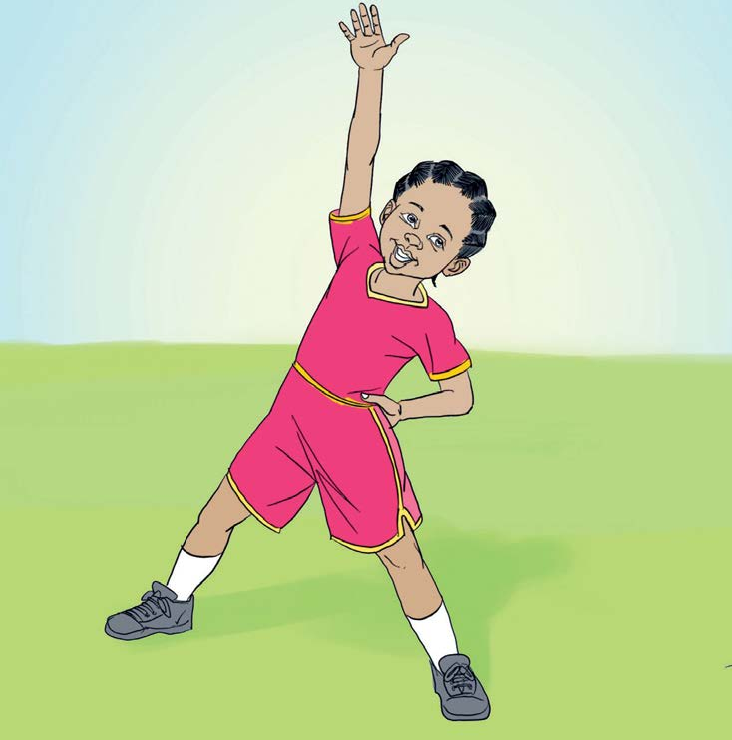

Sura ya Tano
Kucheza michezo mbalimbali
Tujinyooshe miili yetu
Unaweza kujinyoosha ukiwa umesimama, umelala, umekaa, umechuchumaa au umeinama.
Jinsi ya kujinyoosha ukiwa umesimama
- Simama wima na tanua miguu.
- Nyoosha mkono wa kushoto juu.
- Shika kiuno na mkono wa kulia.
- Jinyooshe kwa kuegemea upande wa kulia.
- Badilisha mikono.
- Jinyooshe kwa kuegemea upande wa kushoto.
- Endelea kujinyoosha kila upande mara tano.
